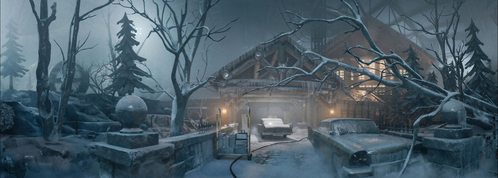

The Last of Us
любимая франшиза
Part I, Left Behind и Part II: об истории, героях и о том, почему вторая часть стала самой любимой игрой.
Читать рецензию
Две игры получили подробные рецензии: франшиза The Last of Us и любимая кооперативная игра The Outlast Trials. У остальных игр короткое впечатление есть прямо на карточке в каталоге.
любимая франшиза
Part I, Left Behind и Part II: об истории, героях и о том, почему вторая часть стала самой любимой игрой.
Читать рецензию
любимая кооп-игра
Кооперативный хоррор о том, как страшно и весело проходить испытания всей командой.
Читать рецензию